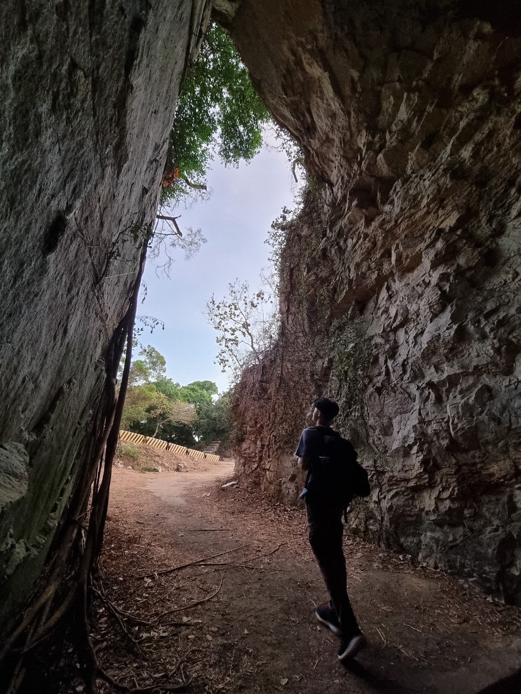
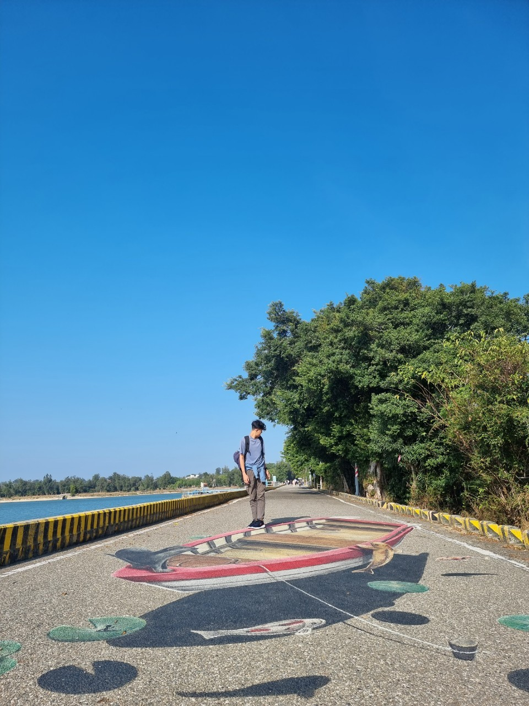
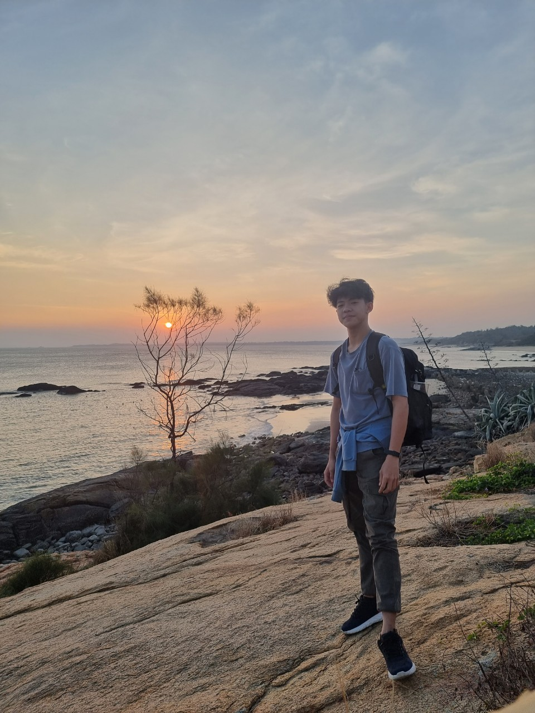
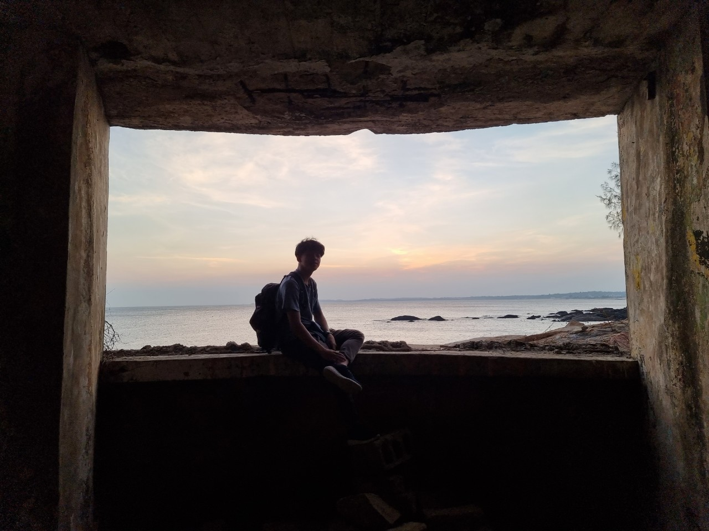
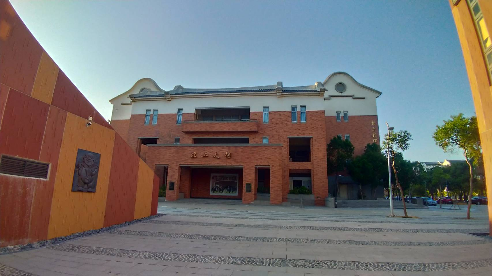

MY WORK
Here are some of my latest lorem work ipsum tipsum.
Click on the images to make them bigger







Travel - Food Vloger - Explorer - Reviewer
On this platform, I'll be sharing my passion for photography and showcasing my portfolio. I believe that a picture can speak a thousand words, and through my photographs, I aim to capture the beauty and essence of the world around us. I have always been fascinated by the art of photography. It allows me to freeze special moments in time and convey emotions through visual storytelling. Whether it's landscapes, portraits, or candid shots, I strive to create images that evoke feelings and leave a lasting impression. Through this blog, I'll be sharing my latest works, behind-the-scenes insights into my creative process, and tips and tricks to improve your photography skills. I hope to inspire fellow photography enthusiasts and ignite a sense of curiosity and appreciation for the world of photography. Feel free to explore the different sections of my website, browse through my galleries, and leave your thoughts and comments. I would love to connect with you and hear your feedback. Thank you for joining me on this artistic journey. Let's capture moments together and celebrate the beauty of life through the lens!
鄭石光 ~ nicoakuang
Some of my skill:
Photography
Web Design
Photoshop
Here are some of my latest lorem work ipsum tipsum.
Click on the images to make them bigger
I'd love your feedback!
Swing by for a cup of tea, or leave me a note: